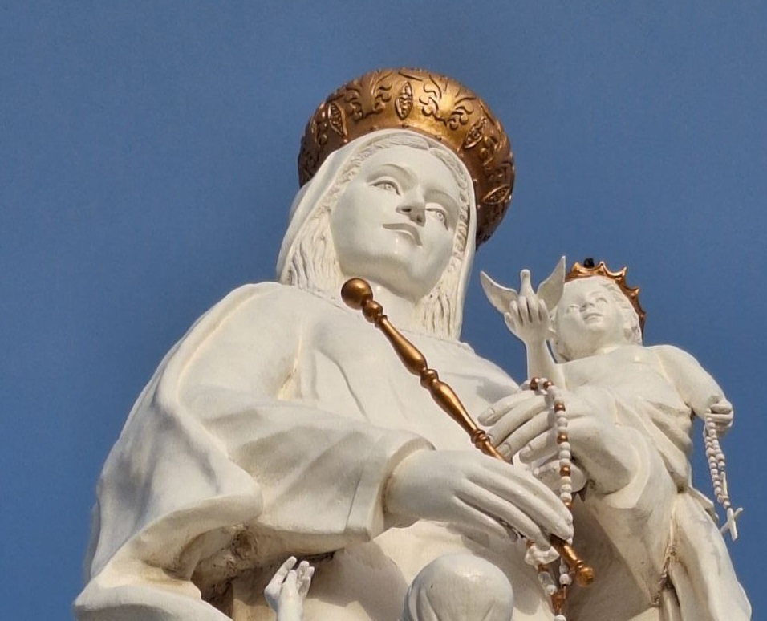

Cronicas

MARACAIBO 2024
Venezuela: Tierra de Milagros y Devoción
Venezuela, un país donde el sol brilla intensamente y las montañas abrazan el cielo, también es hogar de una profunda espiritualidad...

MARACAIBO 2024
Maracaibo: un crisol de historia, cultura y tradiciones
Maracaibo, la capital del estado Zulia, es un crisol de historia, cultura y tradiciones que se reflejan en sus espacios emblemáticos. Desde el majestuoso Teatro Baralt ...